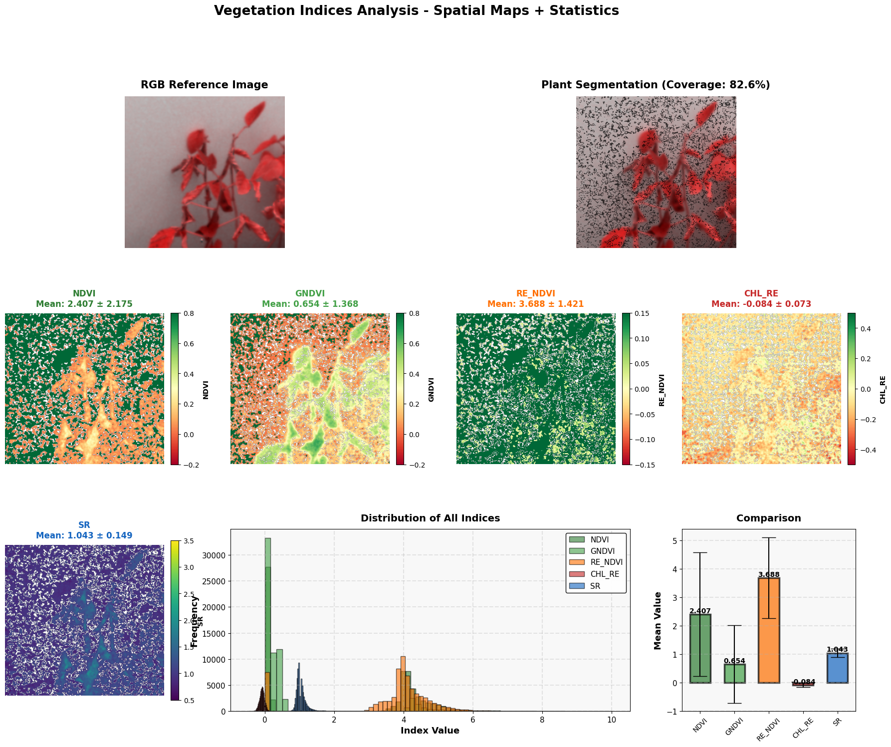
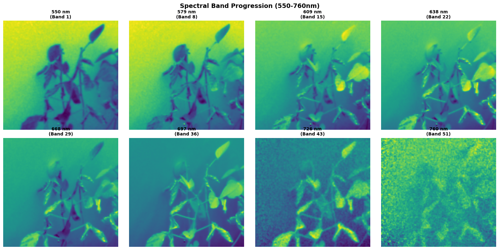
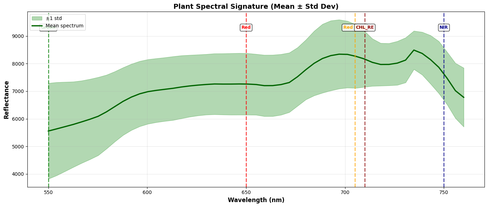

This page explains how hyperspectral image cubes were converted into vegetation indices, spectral features, and structured outputs for plant health analysis.
The hyperspectral feature engineering workflow uses wavelength information to describe plant condition beyond normal RGB color. Each hyperspectral image contains many spectral bands, so the pipeline extracts vegetation indices and spectral measurements that can help show changes in plant health.
Valid hyperspectral TIFF cubes were checked for the expected 51 band structure before feature extraction.
The workflow computed NDVI, GNDVI, red edge NDVI, chlorophyll red edge, and simple ratio.
The feature engineering workflow produced structured timestamped records for analysis over time.
Vegetation indices combine selected wavelength bands to highlight plant traits such as greenness, chlorophyll response, and red edge behavior. These indices help turn hyperspectral images into numerical features that can be analyzed over time.
Uses red and near infrared response to estimate vegetation strength and plant greenness.
Uses green and near infrared bands to capture greenness and chlorophyll related changes.
Uses red edge wavelengths to capture plant changes that may not be clear in RGB images.
Uses red edge behavior to support chlorophyll related analysis.
Uses a ratio between selected spectral bands to summarize plant reflectance response.
This visual shows the main hyperspectral vegetation indices extracted from the image and compares their distributions and mean values.

NDVI, GNDVI, red edge NDVI, chlorophyll red edge, and simple ratio were mapped spatially to show how different spectral features respond across plant pixels.
Hyperspectral imaging captures the same plant across many wavelengths. This visual shows how plant appearance changes as the wavelength increases from lower visible bands toward near infrared bands.

The same plant scene is shown across selected wavelength bands, helping illustrate why hyperspectral data contains more information than a standard RGB image.
The spectral signature summarizes how plant pixels respond across wavelengths. This helps show which wavelength regions were important for the vegetation indices used in the pipeline.

The mean plant spectrum shows reflectance patterns across wavelength bands, with key regions marked for red, red edge, chlorophyll red edge, and near infrared measurements.
The output of the hyperspectral feature engineering workflow is a structured feature table. Each timestamped record contains vegetation index values and related metadata that can be used for analysis, visualization, and future fusion with RGB and depth features.
These features were useful for understanding hyperspectral plant response and can support future model fusion with RealSense RGB and depth features.
RGB images only show visible color, but hyperspectral images capture plant response across many wavelengths. This makes hyperspectral features useful for detecting subtle plant changes that may appear before symptoms are obvious in standard images.
← Back to Home